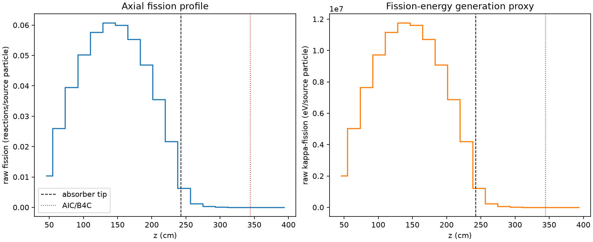
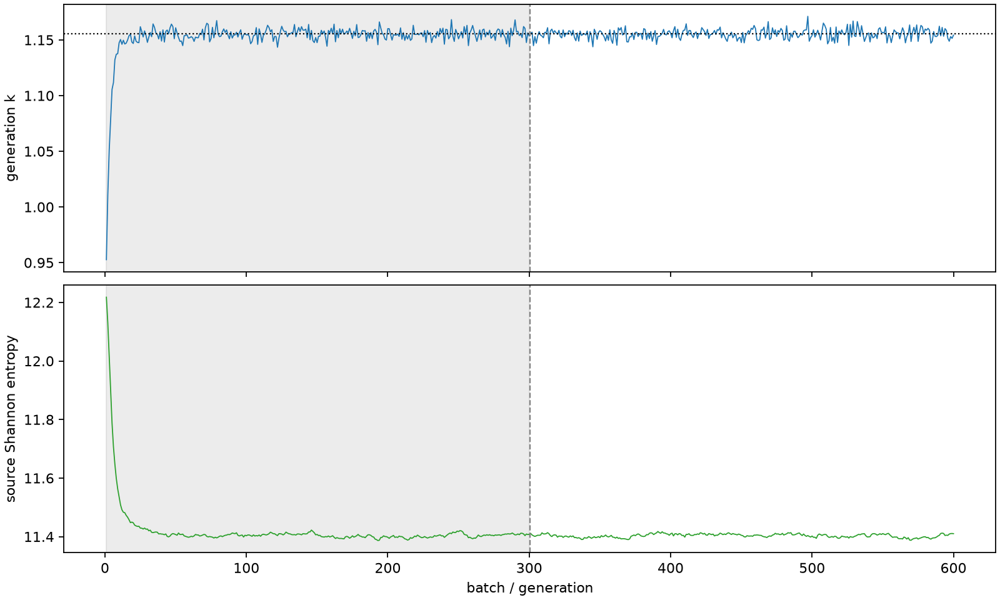

| field | value |
|---|---|
| experiment | V2-STAGE_128_OGRENCI_02-0010 |
| k | 1.155554676392473 |
| MC standard error | 0.00018140445021004616 |
| seconds | 1029.10862171 |
| acceptance | not_assessed |
| convergence | review_required |
Completed is output integrity only; physical and statistical review required. Zero tallies do not prove zero production or zero uncertainty.
| diagnostic | value |
|---|---|
| geometric fuel voxels | 5280 |
| zero fission tally voxels | 355 |
| low signal fuel voxels | 1361 |
| low signal fission share | 5.8166754954186296e-05 |
| low signal kappa share | 5.8192280560323625e-05 |
| important fission share | 0.9500730314361067 |
| previous filter included | 3919 |
| duration estimate s | 1562.5173488400023 |
| actual minus estimate s | -533.4087271300023 |
| fission relative MC error | statistics |
|---|---|
| all_geometric_fuel | {"voxels": 5280, "positive_mean_voxels": 4925, "zero_mean_voxels": 355, "undefined_relative_error_voxels": 355, "median": 0.010450144416876108, "p95": 0.8861671435288438, "maximum": 1.0000000000000002} |
| low_signal | {"voxels": 1361, "positive_mean_voxels": 1006, "zero_mean_voxels": 355, "undefined_relative_error_voxels": 355, "median": 0.647089373480304, "p95": 1.0, "maximum": 1.0000000000000002} |
| important_95pct | {"voxels": 2573, "positive_mean_voxels": 2573, "zero_mean_voxels": 0, "undefined_relative_error_voxels": 0, "median": 0.007112720207625054, "p95": 0.010415833410891551, "maximum": 0.014068275045288172} |
| outside_previous_filter | {"voxels": 1361, "positive_mean_voxels": 1006, "zero_mean_voxels": 355, "undefined_relative_error_voxels": 355, "median": 0.647089373480304, "p95": 1.0, "maximum": 1.0000000000000002} |
| kappa_fission relative MC error | statistics |
|---|---|
| all_geometric_fuel | {"voxels": 5280, "positive_mean_voxels": 4925, "zero_mean_voxels": 355, "undefined_relative_error_voxels": 355, "median": 0.010438662208678229, "p95": 0.8867850074011542, "maximum": 1.0000000000000002} |
| low_signal | {"voxels": 1361, "positive_mean_voxels": 1006, "zero_mean_voxels": 355, "undefined_relative_error_voxels": 355, "median": 0.6461968723179132, "p95": 1.0, "maximum": 1.0000000000000002} |
| important_95pct | {"voxels": 2573, "positive_mean_voxels": 2573, "zero_mean_voxels": 0, "undefined_relative_error_voxels": 0, "median": 0.007104168624062239, "p95": 0.010404896633014195, "maximum": 0.014052367770331739} |
| outside_previous_filter | {"voxels": 1361, "positive_mean_voxels": 1006, "zero_mean_voxels": 355, "undefined_relative_error_voxels": 355, "median": 0.6461968723179132, "p95": 1.0, "maximum": 1.0000000000000002} |
| axial bin | fission share | kappa-fission share |
|---|---|---|
| 1 | 0.021989114629495675 | 0.02199001899918238 |
| 2 | 0.05518809327709786 | 0.05518808430534265 |
| 3 | 0.08374262842159512 | 0.08374224661677841 |
| 4 | 0.10660285687041468 | 0.10660237357570083 |
| 5 | 0.12228160586064032 | 0.12228092188196214 |
| 6 | 0.1286868003745177 | 0.12868594521874555 |
| 7 | 0.127080975809109 | 0.12708032973251754 |
| 8 | 0.11721105447978146 | 0.11721034047656087 |
| 9 | 0.09935424348351443 | 0.09935366200586117 |
| 10 | 0.0752254176273723 | 0.07522497123599453 |
| 11 | 0.04590442407400518 | 0.04590413643824078 |
| 12 | 0.013419265383313518 | 0.01342200982767092 |
| 13 | 0.0025609265148029653 | 0.002562037341068792 |
| 14 | 0.0005839750328119012 | 0.0005842248516584551 |
| 15 | 0.00013015102888961738 | 0.00013021259353856188 |
| 16 | 2.89969726494728e-05 | 2.901111209552632e-05 |
| 17 | 6.470934533201356e-06 | 6.472884115014295e-06 |
| 18 | 2.295168579107927e-06 | 2.2962239387125787e-06 |
| 19 | 4.942118750768704e-07 | 4.950930176324958e-07 |
| 20 | 2.0984500129758535e-07 | 2.095860096716774e-07 |
Histories include the inactive-to-active transition at batch 300. kappa-fission approximates fission energy production, not total heat deposition.

